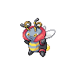

📖 英語版の図鑑説明
Volbeat’s tail glows like a lightbulb. With other Volbeat, it uses its tail to draw geometric shapes in the night sky. This Pokémon loves the sweet aroma given off by Illumise.
日本語訳
尻尾が電球のように光ります。仲間とともに夜空に幾何学模様を描きます。イルミーゼの甘い香りが大好きです。
📝 この図鑑文に出てくる英単語
| 英単語 | 意味 | 品詞 | レベル |
|---|---|---|---|
| glows | 光る | 動詞 | 高校 |
| lightbulb | 電球 | 名詞 | 高校 |
| draw | 引き寄せる、描く | 動詞 | 中2 |
| geometric | 幾何学的な | 形容詞 | 大学 |
| shapes | 形(複数形) | 名詞 | 中2 |
| sweet | 甘い | 形容詞 | 中1 |
| aroma | 香り | 名詞 | 高校 |
文法ポイント it uses は現在形。図鑑では、そのポケモンがふだんから繰り返している習性を現在形で表します。主語が it なので動詞に s がついています。
💡 英語名「Volbeat」の由来
英語名「Volbeat」は、volt（ボルト（電圧の単位））、beetle（甲虫）とbeat（リズム、打つ）を組み合わせた名前と考えられている。フランス語の名前は「Muciole」で、musique（音楽）、luciole（ホタル）から作られている。
出典 Bulbapedia
📊 バルビートの種族値
HP65
こうげき73
ぼうぎょ75
とくこう47
とくぼう85
すばやさ85
合計 430
❓ よくある質問
- バルビートの英語名は？
- バルビートの英語名は「Volbeat」です。
- バルビートの英語名「Volbeat」の由来は？
- 英語名「Volbeat」は、volt（ボルト（電圧の単位））、beetle（甲虫）とbeat（リズム、打つ）を組み合わせた名前と考えられている。フランス語の名前は「Muciole」で、musique（音楽）、luciole（ホタル）から作られている。
- バルビートは英語版の図鑑でどう説明されている？
- 「Volbeat’s tail glows like a lightbulb. With other Volbeat, it uses its tail to draw geometric shapes in the night sky. This Pokémon loves the sweet aroma given off by Illumise.」と書かれています。日本語にすると「尻尾が電球のように光ります。仲間とともに夜空に幾何学模様を描きます。イルミーゼの甘い香りが大好きです。」という意味です。
バルビートは第3世代（ホウエン地方）のポケモンです。第3世代（ホウエン地方）の英語名一覧 →